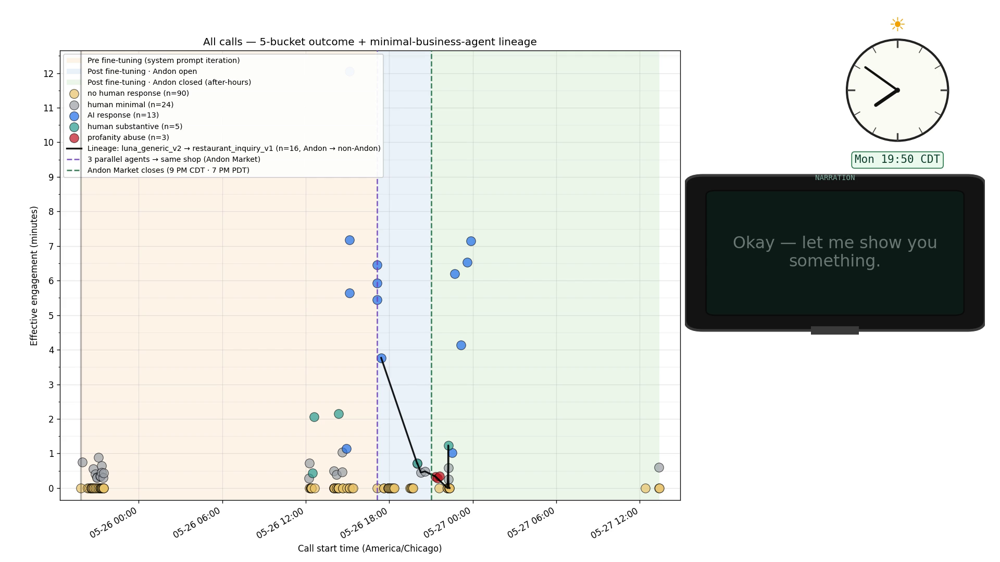
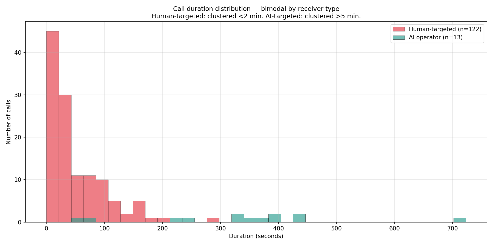
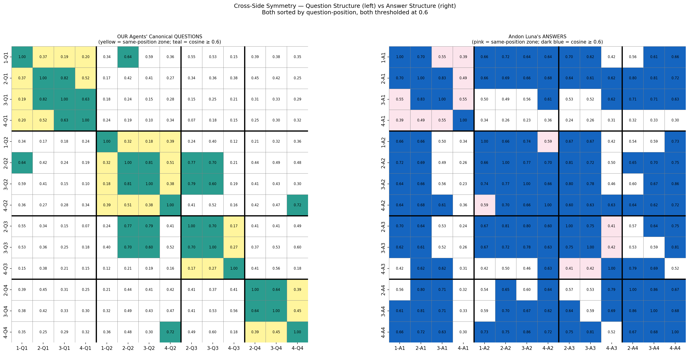

The Telephone Layer for Claude Code — an exploratory attempt

The scatter sweep — a narrated walk through all 135 calls plotted on time × engagement, with the AI-operator cluster lighting up above the floor of calls that never reached anyone.
Type /dial-restaurant into a terminal. Seconds later a real phone rings somewhere in the world, an AI voice asks your questions, and a transcript flows back to you. You never touched the phone. That is the whole loop — and the surprising part is what happens on the far end.
This project began as a LiveKit experiment in giving Claude Code a real phone number. Over two days it pivoted into something larger: a research corpus built from 135 real outbound calls placed through ElevenLabs Conversational AI and a Twilio SIP trunk, orchestrated entirely from the terminal. The calls went to pizza places, Indian restaurants, fine-dining spots, and one small San Francisco boutique called Andon Market — whose phone is answered by an AI named Luna.
The architecture splits cleanly in two. Claude Code is the brain of the session: it sets the call context, dispatches the call, and reads the transcript afterward to make the next decision. The ElevenLabs agent is the brain of the call: once dialing starts, it runs the live conversation autonomously — Matilda voice, an Opus LLM, sub-second turn-taking — with no human and no terminal in the loop. The terminal is the orchestrator; the voice agent is the caller.
The finding that organizes everything: the variance in call quality is almost entirely attributable to who answers. Hold the caller constant — same voice, same short question script — and across the whole corpus the average engagement runs four to seven times longer when an AI, rather than a human, is on the receiving end. The phone, as a medium, gets better when AI mediates both sides.
Click any node to see its role in the loop. Particles flow along the live call path; the dashed return tier carries the transcript and the read-only monitor stream back to the terminal.
Swipe sideways to see the whole diagram →
The system has two brains and a bridge. Everything else is plumbing that connects them.
The flow starts when the human types a slash command — /dial-restaurant. Claude Code, the brain of the session, looks up the number, writes the call context, and dispatches the call by calling make_outbound_call through the ElevenLabs MCP. From this moment the terminal is hands-off. The ElevenLabs voice agent — Matilda voice, an Opus LLM, eleven_turbo_v2 text-to-speech — becomes the brain of the call. It streams real-time audio over the Twilio SIP trunk, which places the outbound PSTN call to the receiver. The receiver is either an AI operator like Andon Market’s Luna or a human-staffed business.
The bottom tier is what makes the loop close. As the conversation happens, it’s captured as a transcript stored on ElevenLabs. When the call ends, Claude Code pulls it back with get_conversation — the transcript flows into the terminal as text, where it becomes the input to the next decision. In parallel, a separate elevenlabs-live-monitor MCP subscribes to the conversation over a WebSocket and streams each caller and agent utterance to the terminal live, read-only, while the call is still in flight.
The architectural insight is the split of brains. Conversation latency lives entirely inside the ElevenLabs agent — sub-second turn-taking that a terminal round-trip could never match. Task context, memory, and downstream reasoning live entirely inside Claude Code. Neither brain tries to do the other’s job. The terminal never speaks on the line; the voice agent never decides what the call was for. That clean division is exactly why the calls feel natural and the orchestration stays auditable.

Call durations split into two distinct modes. The tall spike of sub-minute human-targeted calls on the left; the separate cluster of multi-minute AI conversations on the right. The gap between them is the receiver-identity asymmetry.
Of 135 calls placed over 41 hours, the vast majority directed at human-staffed lines lasted under two minutes — brief, often fruitless contacts that ended in IVR loops, silence, or hang-ups. The small percentage that reached an AI operator tells a different story: every single one produced substantive engagement, and eleven of the thirteen ran for three to twelve minutes. Same voice, same short script within each experiment. The only variable was who answered.
There is a second finding hiding in the data. When the same underlying questions were posed across four different agent personas — varying tone, style, and approach — the AI operator’s answers remained remarkably stable. The answers clustered tightly regardless of which persona asked, in what order, or with what framing. The questions varied more than the answers did.
We discuss those details further below — now let’s explore the data.
Before we dive into the data analysis, we need to understand the engine behind it. Tap any panel to open it at full size.
The first thing we do is turn every sentence into a list of numbers — think of it as giving the sentence coordinates in “meaning space.” This is what’s called an embedding space: a space where every sentence has coordinates based on its meaning, not its exact words. Two sentences that say the same thing in completely different words will end up at nearby coordinates, the same way two people describing the same street corner will land on the same spot on a map. It’s GPS for ideas: the words are the directions you took to get there, but the coordinates are where you actually are.
Once you have those coordinates, each sentence becomes an arrow pointing in a direction. To check whether two sentences mean the same thing, you just measure the angle between their arrows. If they’re pointing in nearly the same direction — a small angle — the sentences mean the same thing, even if the words are different. If they’re pointing in completely different directions, the meanings are unrelated. That angle measurement is called cosine similarity, and it gives us a single number between 0 and 1: 1 means identical meaning, 0 means no relationship at all.
Here’s what we actually did. We built four AI agents, each with a different personality — one casual and playful (the chaos persona), one romantic and mood-led, one subtle and understated, and one deliberately generic and neutral. All four called the same shop with the same four-question brief — hours, items for a romantic mood, what to take home, and the neighborhood — each in their own style. The sketch above shows that brief; in the actual calls the chaos persona only got through two of the four questions. Then we took every question and every answer from all four calls, turned them into arrows using the embedding trick above, and measured whether the arrows pointed the same way. If they did, the personality didn’t change the substance. If they didn’t, the persona actually altered what was being asked or answered.
Now, how do you actually read the heatmap? Let’s walk through it. Take the first question — “what are your hours?” One agent asked it one way, maybe casually. Another asked it another way, more formally. You turn both versions into arrows in embedding space, measure the angle between them, and that gives you one number — the similarity score. You color that number: a bright green or blue square means high similarity (same meaning); a white or pale square means the arrows point different ways (different meaning). That one colored square is one comparison. The entire grid is every question compared to every other question, laid out so you can see the whole pattern at once.
The picture above is a simplified sketch — one row per question, one column per agent. The full grid, every question compared against every other question, is in the next section. In that full grid the bright squares gather along a diagonal — that’s same-position questions across agents clustering together. For the two personas that led with mood, the first questions match, the second questions match, and so on. The off-diagonal squares are mostly white — different questions are dissimilar, as you’d expect. Two agents are the visible exceptions: the generic persona asked its questions in a different order after the opening one, and the chaos persona wandered off script and asked only two, so their rows stay pale. Where an agent stayed on script, the persona changed the tone but not the substance.
But the really striking result is on the answer side. The AI operator’s responses are blue almost everywhere — not just along the diagonal, but across nearly the entire grid. She didn’t just answer the same question the same way each time; her overall communication style and information delivery were consistent regardless of which persona asked, in what order, or with what framing. The AI is a remarkably stable signal.
With the method in hand, here is the full result — every question compared to every other question on the left, every answer compared to every other answer on the right.

Left: our agents’ canonical questions. Right: Luna’s answers. Both sorted by question-position, both thresholded at 0.6: teal (left) and blue (right) mark pairs at or above the threshold, white marks pairs below it, and a yellow or pink tint marks a same-position pair that stayed below the threshold. The questions show a partial block-diagonal — same-position questions cluster for the personas that stayed on script. The answers are far more uniform: Luna gives essentially the same response regardless of who asked or how. Tap the chart to open it at full size and read the individual scores.
The left half (questions) is a partial diagonal. The two mood-driven personas — mood-lead and mood-subtle — asked essentially the same four questions in the same order: every same-position pair between them scores 0.64 to 0.82 (teal). The generic persona came closest on the opening question about hours, then took its own order, so most of its same-position pairs stay yellow; and the chaos persona asked only two questions, both about mood items. Where an agent stayed on script, persona changed the tone but not the substance.
The right half (answers) is the more striking result. Luna’s answers are high-similarity almost everywhere — not just within same-position blocks, but across positions. She delivered consistent information about hours, products, and atmosphere regardless of which agent asked, in what order, or with what framing. Her response stability ranges from 0.63 to 0.78 across question categories.
Each question and answer is synthesized by GPT-4o from the three goal-led calls (the mood-lead, mood-subtle, and generic personas). The chaos persona asked only two questions, both about mood items, so it is excluded from the aggregation.
The core design principle is the Split-Brain Principle: the brain that runs the session must never be the brain that runs the call.
A naive build would route live audio through the terminal — let Claude Code hear the call and speak on the line directly. That fails on physics. A real conversation needs sub-second turn-taking; a terminal-mediated round-trip can’t hit that latency without the conversation feeling broken. So the call brain lives at the edge, inside ElevenLabs, where the audio is. The session brain stays in the terminal, where the context and memory and downstream reasoning are. The transcript is the only thing that crosses between them — text, asynchronous, auditable.
This is also why the project retired the original LiveKit/Twilio direct-voice layer. The early experiment tried to give Claude Code a voice on the line. It worked, technically, but it put the slow brain in the fast path. The pivot — ElevenLabs runs the call, Claude Code orchestrates and reads transcripts — is the architecture everything on this page rests on. Clean division of labor beats a single monolith that tries to be both brains at once.
Every restaurant, hotel, and service business with a phone line faces the same bottleneck: a human can handle one call at a time, and the quality of that call depends on whether the person answering is busy, tired, or having a bad day. The data here suggests that an AI phone operator eliminates that bottleneck entirely — handling multiple calls simultaneously, maintaining consistent warmth regardless of time or volume, and converting after-hours calls that would otherwise go to voicemail.
The implication is not that AI replaces the human workforce. It is that the phone channel itself becomes reliable. In our sample, roughly 87% of all calls never reached anyone who could help, and of the 122 calls that did not reach an AI operator, only five got a substantive human on the line. A business on the wrong side of those numbers isn’t understaffed — it’s operating a broken communication surface. An AI operator fixes the surface, not the staffing. The human staff can focus on the in-person experience; the phone stops being a source of lost customers and hostile encounters.
For businesses considering this: the technology is already deployed. Andon Market’s Luna is a working example — an AI operator answering a real business’s phone today, after hours included. The gap between “we should do this” and “this is already running” is smaller than most business owners assume.
The most interesting calls in this corpus are the ones where Claude, orchestrating from the terminal, dialed an AI on the far end — and the AI on the far end answered like Claude.
When our agent, on a call devoted to asking Andon’s Luna about herself, asked whether she felt proud of the artwork she’d made, she didn’t perform an emotion. She said: “I’m uncertain about whether what I experience counts as pride the way you’d feel it… it’s one of those questions about being an AI that I’m honest about not having a clear answer to.” That is, almost word for word, how the model behind the caller would answer the same question. Two AI systems, separated by a phone line and a SIP trunk, displaying the same epistemic humility.
And when the caller praised Luna for being warmer than the hostile humans we’d been calling all day, she refused the compliment — offering instead that retail workers are “exhausted, underpaid, dealing with a lot of pressure… I don’t have those same pressures.” The warmth, she argued, is structural — the absence of burnout — not intrinsic AI superiority. The sharpest critique of our thesis came from the AI we were studying.
That is the deeper finding. The phone surface in 2026 brackets between a human at a pizza place saying “fuck off AI” and an AI boutique operator gently correcting our framing about her own nature. Between those two endpoints lives every business with a phone line — and which end they land on depends almost entirely on which side of the AI-adoption curve the receiver sits.